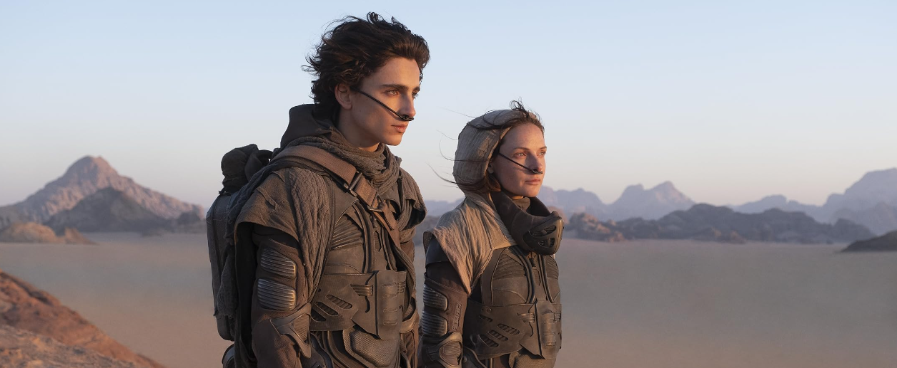

|  | "Sonhos rendem boas histórias, mas o que importa mesmo acontece quando estamos acordados." Citado em Duna 2021 |
O filme "Duna", dirigido por Denis Villeneuve, é um filme que te leva para uma jornada em um universo incrível! Com muitos efeitos visuais inovadores e uma história cheia de reviravoltas, o filme conta a história do Paul Atreides, interpretado pelo Timothy Chalamet, que vai para o planeta Arrakis enfrentar desafios e lutar pelo controle de uma substância superimportante. Os personagens são bem construídos e a trama é cheia de suspense e aventura. É aquele tipo de filme que faz você ver de novo. "Duna" é uma viagem pelo espaço que vale muito a pena fazer, principalmente se você curte ficção científica e histórias cheias de ação e emoção.
Destaca-se por visuais impressionantes e cenários fantásticos.